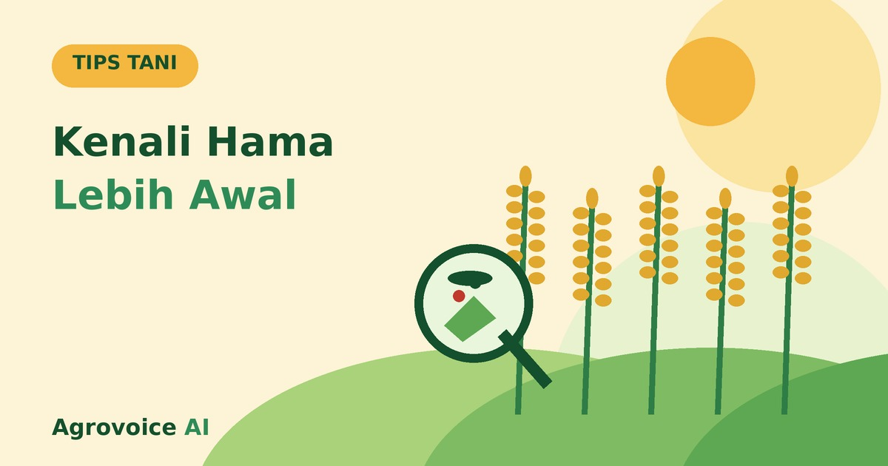

Artikel untuk Anda
5 artikel

Panduan Pengendalian Hama Wereng Batang Cokelat secara Terpadu
Langkah antisipasi dan strategi pencegahan dini serangan wereng cokelat pada tanaman padi menggunakan metode PHT dan pemanfaatan musuh alami.
Baca artikel
Manajemen Pakan dan Nutrisi untuk Penggemukan Sapi Potong
Formula pakan konsentrat seimbang dan hijauan bermutu tinggi untuk mempercepat pertambahan bobot harian sapi secara optimal.
Baca artikel
Penerapan Sistem Bioflok untuk Efisiensi Budidaya Ikan Nila dan Lele
Optimasi penggunaan lahan sempit dan efisiensi pakan hingga 30% dengan memanfaatkan mikroorganisme pengurai dalam kolam terpal bulat.
Baca artikel
Dinas Pertanian dan Perikanan Dorong Digitalisasi Pelaporan Penyuluh Lapangan
Kolaborasi dinas dengan para penyuluh lapangan dalam mempercepat verifikasi data kelompok tani melalui platform pencatatan suara.
Baca artikel
Update Agrovoice: Peningkatan Fitur Offline-First dan Pengenalan Suara Lokal
Pembaruan sistem Agrovoice kini mendukung pemrosesan rekaman suara tanpa jaringan internet dan pengenalan istilah pertanian daerah.
Baca artikel
Belum ada artikel
Belum ada artikel yang cocok dengan pencarian Anda.